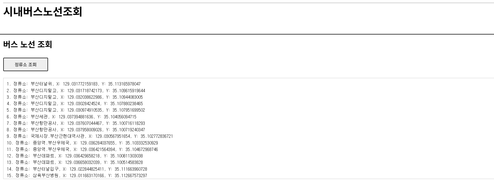
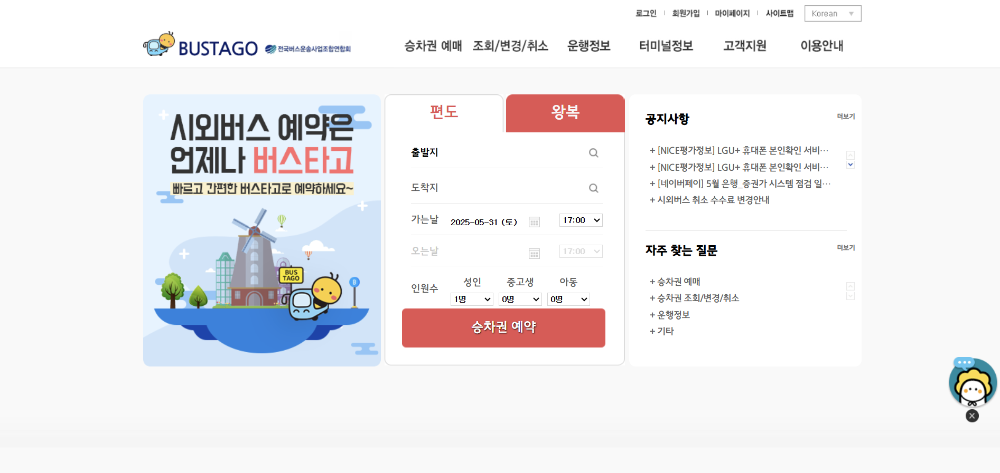
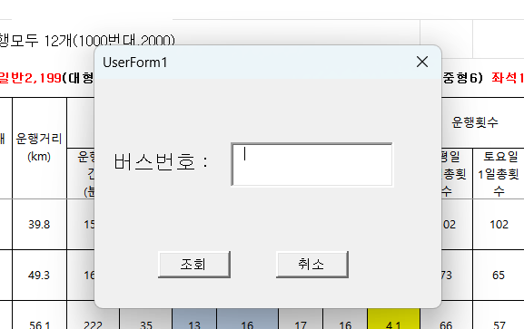
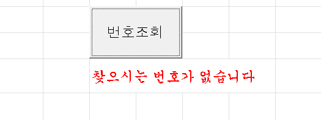

정류장 조회, 지도 이동 사용법
버스의 정류장에 대한 정보를 알려드립니다.
버스 정류장의 이름의 일부를 입력하시면 해당 단어를 포함하는 모든 결과를 아래의 빈칸에 나열합니다.
예를 들어 '부산'이라는 단어를 입력한다면 아래의 결과가 나올 것 입니다.

여기서 '정류장'은 정류장의 이름을 말하고, X는 해당 정류장의 경도, Y는 해당 정류장의 위도를 의미합니다.
위도와 경도는 이어서 설명할 '이동하기' 기능에서 중요한 정보이고 외워서 쓰기는 어려우니 복사해서 다른 곳에 붙여놓아 두는 것이 좋습니다.
정류장 정보 출력 위치의 아래의 지도는 확대, 축소, 이동이 가능한 지도입니다.
지도 아래에 있는 '이동하기'버튼을 클릭하면 컴퓨터가 gpsx와 gpsy를 물을 것 입니다.
이전에 복사해둔 정류장의 X,Y를 각각 붙여넣어 주면 해당 위치로 이동 후 적절하게 확대 될 것입니다.
시외버스 예매 방법
메인 페이지의 '시외버스예매사이트'를 클릭하고 시외버스 예매 사이트 '버스타고'로 이동합니다.

해당 페이지의 상단에 '승차권 예매-예매/발권'으로 표시된 상자를 눌러 승차권 예매 폼으로 이동합니다.
해당 폼에 본인의 의도에 맞게 정보를 입력하고 '조회하기'버튼을 클릭합니다.
정상적으로 위의 과정을 진행하면 해당 페이지의 아래에 예약 가능한 버스들의 정보가 표시되고 예약을 할 수 있게 됩니다.
이후, 좌석선택을 하면 어떤 방식으로 예매를 진행 할 지가 나오는데 비회원 예매도 가능하니 원하는 방법을 선택하면 됩니다.
다음으로, 예매에 대한 개인 정보 폼의 입력을 마치고 결제를 진행하면 예매 진행은 끝납니다.
엑셀 파일 번호조회방법
성공적으로 엑셀 파일이 화면에 나타날시 오른쪽 상단 [Y2:Z3]영역에 번호조회 라는 버튼이 존재 할 것입니다.
해당 버튼을 클릭할 시 아래의 사진이 나타납니다.

'버스번호'입력란에 조회하고자 하는 번호를 입력하고 '조회'버튼을 클릭하면 버스번호가 있는 행으로 이동 할 것입니다.
하지만 존재하지 않는 번호를 입력 할 시에는 [Y4]영역에 빨간 글씨로 "찾으시는 번호가 없습니다"가 출력될 것입니다.

(심야sheet의 경우 행수가 적으므로 조회 기능을 넣지 않았습니다.)
평가 페이지 유의점
평가 페이지는 저희가 제공하는 서비스에 대한 만족도를 묻습니다.
나이를 제외한 개인 정보는 묻지 않으므로 걱정 할 필요는 없습니다.
하단에는 '제출'버튼과 '초기화'버튼이 있습니다. '초기화'버튼은 썼던 내용들을 모두 지우고 새로 쓸 때 사용합니다.
제출 버튼을 누를 시 작성한 내용이 메인 페이지의 '평가 페이지에서 접수된 의견들'로 옮겨집니다.
naver어학사전 사용법
'naver어학사전 연결'은 메인 페이지와 '도움말' 페이지에만 있습니다.
해당 기능은 제공되는 서비스에서 이해가 되지 않는 단어를 편하게 검색 할 수 있게 하려고 제공하였습니다.
검색 글상자에 검색하고자 하는 단어를 입력한 후 제출 버튼을 누르면 해당 단어가 검색된 어학사전으로 이동합니다.